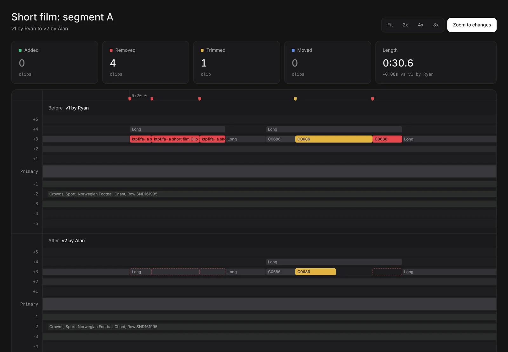
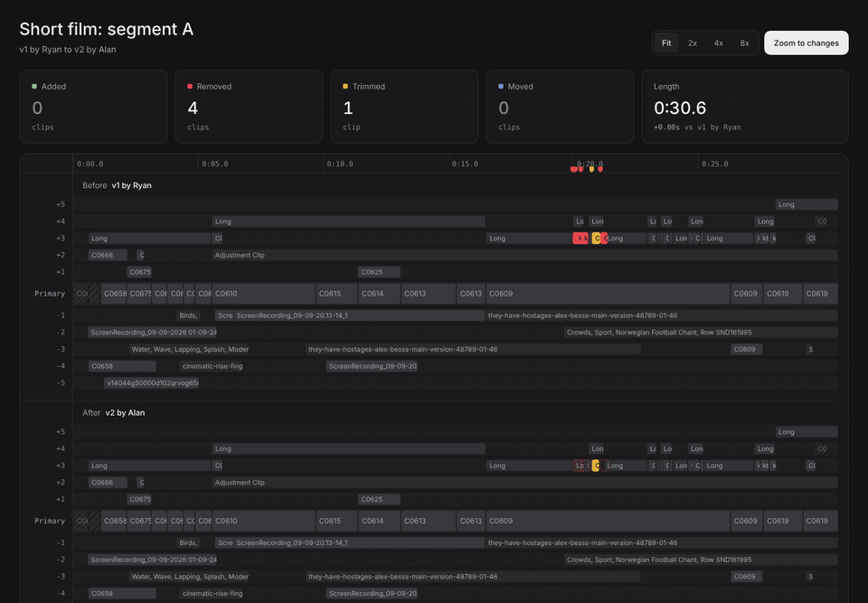
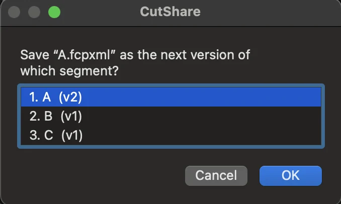
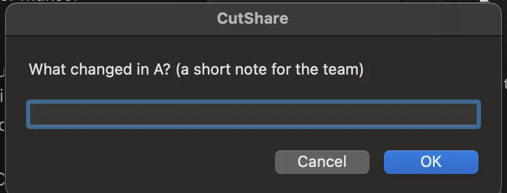
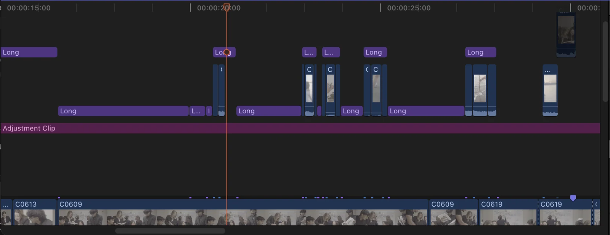
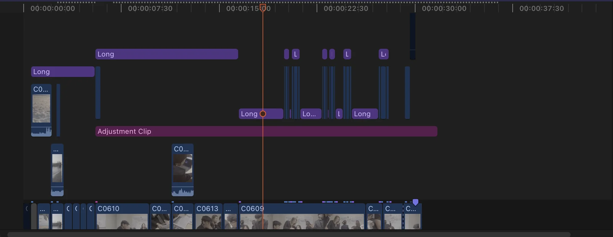

Case study · Nov 2026 · Personal project
CutShare
Parallel editing for Final Cut Pro
Final Cut Pro has no way for two editors to work on one project. I built a tool that splits a video into segments, lets several people cut their own segment at the same time, and stitches everyone's work back into one timeline with a right-click. Every change shows up on a visual diff.

01 · The problem
One editor, every cut
Club videos like FASA's theater productions, event recaps and short films always come down to a deadline with one person doing every cut. Other people could help, but Final Cut Pro has nothing built in for teamwork. Teams email XML files around or pass a library back and forth, and work gets lost.
So I asked: could several people edit one FCP video at the same time, like a Google Doc?
02 · Research
What exists
I looked at how six tools handle collaboration before writing any code.
The insight: every serious tool chose one owner per section, then merge, not live co-editing, because two people trimming the same spot undo each other. FCP also has no live timeline API. So I built the version that's possible and actually useful: parallel segments, automatic assembly and clear change tracking.
03 · What I built
Split, edit, merge
- New project. The lead editor right-clicks a rough cut and picks where to split it. Cuts snap to the nearest clip.
- Open a segment. Each editor locks their piece and it opens in Final Cut Pro, with media relinked for their Mac.
- Submit. They export, right-click, and add a note. A visual diff opens showing exactly what changed.
- Assemble. One right-click stitches every segment into a master timeline and opens it in FCP.




04 · How it works
The hard parts
- Merging timelines
- Each FCP export numbers its media and effects from scratch, so a naive merge collides. CutShare re-keys every resource per segment, de-duplicates shared footage, renumbers everything, and makes title styles unique. The output passes Apple's own FCPXML format checks.
- Frame-accurate time
- All timing uses exact fractions instead of decimals, so nothing drifts off a frame at 23.976, 29.97 or 59.94 fps.
- Media on every Mac
- Footage lives in a different place on every computer. Paths become a placeholder when saved and turn into each editor's own folder when opened.
- Sync without a server
- A project is a folder on Google Drive or Dropbox. Every version and lock is its own small file, so two people syncing at once never write to the same file.
- Finding what changed
- Main-storyline clips are aligned like a text diff. Connected clips are matched in three passes, nearest first, so a clip that moves along with its parent isn't flagged as changed.
- No Terminal
- Five Finder Quick Actions, generated as Automator workflows with native macOS dialogs, plus a one-click installer.
05 · Results
Tested on real footage
- Split a real 59.94p short film (11 lanes, 72 clips, 55 media and effect files) and reassembled it with zero differences from the original.
- The visual diff caught all 5 real edits I made, all within about one second of a 30-second segment.
- Imported back into Final Cut Pro 12 with color grades, sound effects, titles and masks intact.
- 17 automated tests run on every change, on Mac and Linux, including a simulated three-editor session.

06 · What I learned
Research first
My first idea, live editing like Google Docs, turned out to be both impossible in FCP and something pro tools deliberately avoid. Researching first turned a dead end into a clearer product: parallel work plus a great merge.
Testing on my own messy real project mattered more than my sample files. It surfaced compound clips, retimes and lane shifts that synthetic tests never would have.
A pilot with other FCP editors on a real club video, a solo mode for version history even without a team, and a panel inside Final Cut Pro.